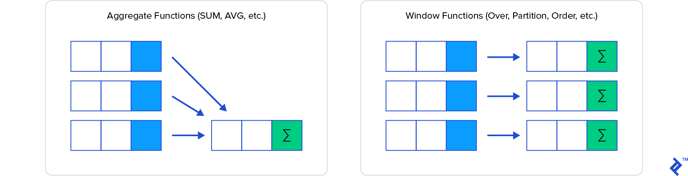
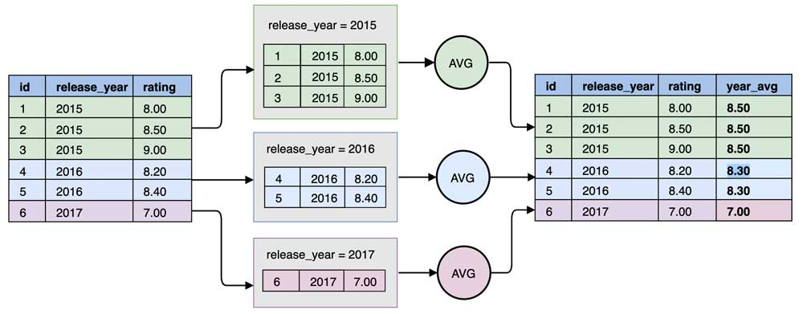

本文主要还是参考了Oracle相关资料，所以文中的语法细节和某些函数在其他DB不会生效。
我并不希望过多关注语法细节和具体函数（这些都可以自行百度），而更希望对分析函数这块的知识进行抽象。
前言
分析函数，也称为窗口函数。
使用分析函数的查询，基于数据行的分组来计算总量值。尽管与一般的聚合函数提供的分组统计类似，但其主要不同点是，分析函数为每个分组返回多行数据。不同于每个分组只得到一行数据，分析函数可以同时得到所有行的详细数据。区分分析函数和聚合函数的一种方法就是，在体积分析函数中使用的一组数据时，使用数据：窗口。
“窗口”（windows）是通过分析子句定义的。每一行限定在一个滑动窗口中，这些滑动窗口确定了用来计算当前行的数据行范围。
可以把窗口理解为一个集合，一个窗口就是一个集合，在统计分析中有需要不同的「窗口」，比如一个部门分成不同组，在统计时会按组进行平均、排名等操作。再比如，在一些像时间这种有顺序的数据，我们可能5天分一组、一月分一组再进行排序、求中位数等计算。
分析函数在SQL执行的顺序：除了ORDER BY子句，分析函数在查询中是最后执行的运算。
示例数据
为了方便讲解和更加直观，我建立了一张数据表，该表名为scores，存放了各班级各学生的数学成绩。建表语句如下：
create table math_scores( |
剖析
与聚合的不同
窗口函数会按当前所在的分组进行聚合计算，并将聚合计算结果追加在当前行对应的新列，它表达的是当前行与这所在分组的关系。

窗口函数和 Group By 聚合函数区别在于：窗口函数仅仅只会将结果附加到当前的结果上，它不会对已有的行或列做任何修改。而 Group By 的做法完全不同：对于各个 Group 它仅仅会保留一行聚合结果。

与 group by 的区别
- 结果数据形式
- 窗口函数可以在保留原表中的全部数据
- group by 只能保留与分组字段聚合的结果
- 排序范围不同
- 窗口函数中的 order by 只是决定着窗口里的数据的排序方式
- 普通的 order by 决定查询出的数据以什么样的方式整体排序
- SQL 顺序
- group by 先进行计算
- 窗口函数在 group by 后进行计算
语法
分析函数有三个基本组成部分：分区子句、排序子句以及开窗子句。分析函数的基本语法是：
function1(argument1, argument2,...argumentN) over([partition-by-clause] [order-by-clause] [windowing-clause]) |
function1
function1是所调用的接收0个或多个参数的分析函数。下表列举了常用的分析函数。（不需要纠结每个函数具体怎么用，大致了解功能，用的时候再细看。）
| 函数 | 描述 |
|---|---|
| lag | 访问一个分区或结果集中之前的一行 |
| lead | 访问一个分区或结果集中之后的一行 |
| first_value | 访问一个分区或结果集中第一行 |
| last_value | 访问一个分区或结果集中最后一行 |
| nth_value | 访问一个分区或结果集中任意一行 |
| rank | 将数据行值按照排序后的顺序进行排名，在有并列的情况下排名值将被跳过 |
| dense_rank | 将数据行值按照排序后的顺序进行排名，在有并列的情况下也不跳过排名值 |
| row_number | 对行进行排序并为每一行增加唯一编号。这是一个非确定函数 |
| ratio_to_report | 计算报告中值得比例 |
| percent_rank | 将计算得到的排名值标准化为0-1之间的值 |
| percentile_cont | 取出与指定的排名百分比相匹配的值。是percent_rank的反函数 |
| percentile_dist | 取出与指定的排名百分比相匹配的值。采用谨慎分布模型 |
| ntile | 将数据行分组为单元 |
| listagg | 将来自不同行的列值转化为列表格式 |
除了上述分析函数，function1还可以是min/max/avg/count等聚合函数。
分区子句
分区子句按照分区列的值对数据行进行分组。所有分区列的值相同的数据行被组合为一个数据分区。例如partition by class_num就是按班级进行分区。
排序子句
排序子句对数据分区中的行进行排序。排序可以按照升序或者降序，使用NULLS FIRST或NULLS LAST子句可以将空值放到数据分区的最上面或最下面。
开窗子句
之前的窗口是固定的数据分组窗口，但有时候我们需要根据数据的前后再分配窗口，比如在股票、气温等数据场景下，数据的前后会有影响，就适用于移动窗口计算。
开窗子句指定了分析函数进行运算的数据子集。这个窗口可以是动态的，他有一个很恰当的名字——滑动窗口。使用窗口说明子句来指定滑动窗口的上下边界条件。窗口子句的语法如下：
[ROWS | RANGE] BETWEEN <start expr> AND <end expr> |
其中：
- 移动范围设定
- rows: 物理窗口，rows 后的 n 是指相对当前行偏移n位（当前行也参与计算），可以与 between 搭配使用表达范围
- range: 逻辑窗口，是指定当前行对应值的范围取值。
- rows和range的区别见参考资料3
- 偏移方向
- precending: 向当前行之前
- following: 向当前行之后
同时，preceding 与 following 可以相结合，例1：
rows between 1 precending and 2 following |
表示当前行的前一行和后两行，共 4 行（包括当前行）作为汇总的依据。
例2：
rows between unbounded preceding and current row |
表示窗口最上一行是当前分区中的第一行而窗口最下一行是当前的数据行。
并不是所有的分析函数都支持开窗子句；
分析函数不能嵌套。
窗口子句不能单独存在，必须有order by子句时才能出现。
默认窗口分两种情况：
- 有order by时，无窗口子句，则默认的窗口是
unbounded preceding and current row，即当前组的第一行到当前行- 无order by时，无窗口子句，则默认的窗口是
unbounded preceding and unbounded following，即整个组
举例
- 下面sql指出了每位学生所在班级的平均数学成绩
SELECT student_id, class_num, AVG(score) OVER (PARTITION BY class_num) AS math_avg |
student_id class_num score alg_avg |
- 计算每位同学数学成绩的班级排名
SELECT student_id, class_num, score, RANK() OVER (PARTITION BY class_num ORDER BY score DESC) AS rankk |
student_id class_num score rankk |
lead和lag
lead函数支持访问结果集中后面的行，lag能够访问结果集中前面的行。
lead和lag的语法如下：
lag(expr [, offset] [, default]) OVER ([partition_by_clause] order_by_clause) |
lead和lag不支持开窗子句。这两个函数仅支持partition_by子句和order_by子句。
下面的sql给出当前数据行前一行的数学成绩（成绩从大到小排序）
SELECT student_id, class_num, score, lag(score, 1) OVER (ORDER BY score DESC) AS last_score |
student_id class_num score last_score |
由于第一行没有前一行，所以第一行last_score为NULL，如果不想让它为NULL ，可以使用lag/lead的第三个参数指定默认值。
理解offset是行偏移，而不是数据值偏移
first_value和last_value
first_value和last_value分别从数据行窗口返回第一行的列值和最后一行的列值。其语法如下
first_value(expr) over([partition-by-clause] [order-by-clause] [windowing-clause]) |
例如，使用first_value可以实现计算每个班级的数学成绩最高分。（自行思考）
使用开窗语句，可以为这些函数运算定义动态滑动窗口，例如计算到目前为止的最大销售额
处理空值
空值通过[RESPECT NULLS | IGNORE NULLS]处理。RESPECT NULLS子句是默认值。默认情况下，如果第一行的列值为空，first_value函数就会返回空值。如果指定了IGNORE NULLS子句，则first_value函数将会返回在窗口中第一个列值不为空的行的值。
rank/dense_rank/row_number
这三个函数都是返回排名，不同之处在于他们对排名相同行的处理。
rank() OVER([partition_by_clause] order_by_clause); -- 间断，相同值同序号，如 1、1、3、4、5 |
row_number是一个非确定函数，如果数据分区中的两行具有同样的值，row_number的值是不确定的。
这三个函数都不能使用开窗子句
其他分析函数
nth_value
first_value和last_value函数能够获取排序过的结果集中第一行或最后一行的数据。使用nth_value函数，可以获取排过序的结果集中的任意一行。
语法如下：
nth_value(measure, n) [FROM FIRST | FROM LAST ] [RESPECT NULLS | IGNORE NULLS] OVER(...) |
其中第一个参数是列名，第二个参数为窗口位移量。
ratio_to_report
ratio_to_report计算数据分区中某个值与和值的比率。
listagg(Oracle)
这是Oracle 11gR2中引入的分析函数。这个分析函数能够将来自多个行的列值转化为列表格式。
listagg语法如下：
listagg(string, separator) within group (order-by-clause) over(partition-by-clause) |
在HIVE中可以使用
collect_list或collect_set以及数组转字符串函数concat_ws(',', COLLECT_LIST(<cloumn>))来实现相同的效果。listagg函数的一个局限就是，他的结果强制为VARCHAR2数据类型的最大长度。
参考资料
- 《精通Oracle SQL》 第八章
- HIVE SQL教程 窗口计算
- 分析函数用法及窗口子句 range/rows差别